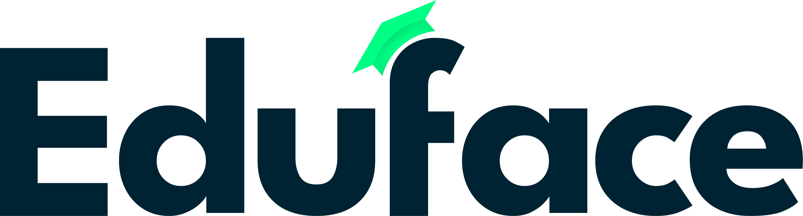

Webinar funnel · intern
Van webinarbezoeker naar SQL

MQL · interesse opbouwen
Product zien en kwalificeren
SQL
1
Webinarbezoeker
Start
Iemand bezoekt het webinar en komt binnen als MQL.
2
Mail met webinar en white paper
Eduface
De bezoeker krijgt een mail met de webinar en de white paper.
3
Belletje
Jeroen
Wat vond je van de white paper?
Daarna: wie in je team vindt dit ook interessant? Insteek is nadenken over verdere uitrol. Bied de mini offer aan om dat samen te ontdekken.
Door als
Ja op de mini offer
4
Mini offer
Prospect
De persoon gaat zelf met de mini offer aan de slag.
Door als
Mini offer geconsumeerd
5
Live webinar met de tool
Eduface
We laten de tool live zien in een webinar.
Door als
Live webinar bijgewoond
6
Nabellen
Eduface
We bellen na, vragen om een meeting en testen de champion (zie onder).
Door als
Meeting staat
Champion getest
✓
SQL
Sales neemt over
Meeting gepland en een geteste champion. Vanaf hier loopt het salesproces.
Volgende stap
De meeting zelf
Champion testen in stap 6
- Legt uit hoe inkoopbeslissingen bij hen genomen worden
- Beschrijft hoe ze nieuwe tools evalueren
- Weet wie betrokken was bij de laatste grote aankoop
- Loopt het huidige proces met je door
- Legt uit waarom de pijn groot is en wat niets doen kost
- Brengt je in contact met andere stakeholders